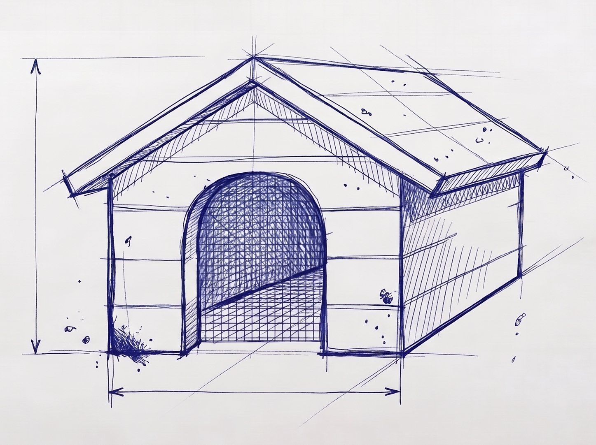

01
The threat catalogue
Documented threats from untrusted local code, with stable IDs, incident citations, and MITRE and compliance mappings. The catalogue stands on its own.
A reference monitor for the user level
An AI agent needs your repo. A package install needs a registry. A development container needs your files. Broad mounts and open network access can give any of them much more than the job requires. Kennel runs each task under your account with a signed access policy: resources it does not need are absent; necessary connections are checked at runtime.
Linux · kernel ≥ 6.10 ·
apt install kennel / dnf install kennel

Fig. 1 — the kennel
Why
Package scripts, build plugins, language servers, and AI agents often run with your uid. Without a separate boundary, they can reach the files and services your account can reach, including credentials and unrelated projects.
Kennel uses namespaces and other Linux controls also used by sandboxes. It arranges them as a reference monitor with two paths. Construction removes ungranted files, processes, devices, and routes; Landlock and seccomp restrict unused operations and kernel entry points. When the task needs a connection or service, a separate daemon checks each request against the signed policy before a host-side component acts. The workload cannot change that policy.
The identity boundary holds inside the kennel too. Trusted setup uses a mapped root account to construct it; the workload starts as your UID, with no path back to that root account in the kennel's user namespace.
The workload can be useful and still make unsafe choices. Kennel enforces the access you chose without trying to judge its intent.
The project
Documented threats from untrusted local code, with stable IDs, incident citations, and MITRE and compliance mappings. The catalogue stands on its own.
The adversary model, trust boundaries, and policy model. It describes what the runtime must enforce without depending on Linux implementation details.
A Linux implementation whose controls map to the threat catalogue. Install it with
apt or dnf.
Read the threat catalogue and design, or install the runtime.
The runtime · Linux
A kennel limits visible files, permitted programs, and network destinations. It uses your real workspace, brokers permitted connections, and records policy decisions. Each control has a corresponding threat in the catalogue.
The workload sees only the paths you grant: your actual repository, in place. No image to sync, no files shuffled in and out.
Outbound traffic runs through a broker that checks it against a list of permitted destinations and records every connection. Anything not on the list simply can't be reached.
Execution is limited to the programs the policy permits, so a compromised tool doesn't have the rest of your toolchain to reach for.
Paths the policy does not grant are absent from the constructed view. The workload cannot enumerate host files it cannot see.
Policies are declarative, versioned, and signed. Compilation rejects a template that weakens a required constraint.
Policy decisions and denials are recorded as structured events that can be reviewed locally or sent to an audit system.
kenneld runs as an ordinary user process. A small helper with file capabilities
performs the setup that requires privilege. The kennel's user namespace maps UID 0 for trusted
setup, but the workload runs as your UID and cannot regain UID 0 there. No subordinate UID range
is delegated to it. End-to-end operation has been verified on Debian/Ubuntu with AppArmor and
Fedora with enforcing SELinux.
The runtime uses Linux namespaces, Landlock, seccomp, and cgroup BPF. The threat catalogue and design can guide implementations on other systems; those runtimes have not been built.
Install · on Linux
Import the project's signing key and check its fingerprint against this site, the GitHub release,
and the domain's DNS TXT record. Then install with apt or
dnf; the package manager verifies later packages and repository metadata.
Debian / Ubuntu
curl -fsSL https://packages.projectkennel.org/kennel-archive-keyring.asc \ | gpg --dearmor | sudo tee /usr/share/keyrings/kennel.gpg >/dev/null # cross-check the fingerprint before trusting it: gpg --show-keys /usr/share/keyrings/kennel.gpg echo "deb [signed-by=/usr/share/keyrings/kennel.gpg] https://packages.projectkennel.org/deb stable main" \ | sudo tee /etc/apt/sources.list.d/kennel.list sudo apt update && sudo apt install kennel
Fedora / RHEL (the .rpm loads the SELinux module for you)
sudo curl -fsSL https://packages.projectkennel.org/rpm/kennel.repo -o /etc/yum.repos.d/kennel.repo sudo rpm --import https://packages.projectkennel.org/kennel-archive-keyring.asc sudo dnf install kennel
Signing key
663C 67B0 9FDD A9EE E57F A295 88D5 8446 1C4D 6EE9. Verify out of band:
dig +short TXT _kennel-key.projectkennel.org.
then: enable the daemon & run something inside a kennel
# kenneld is an ordinary user process, socket-activated on first use, no root daemon: systemctl --user enable --now kenneld.socket # confine an AI coding agent to a repo, a named toolchain, and a few registries: kennel run claude # a detachable interactive shell (Ctrl-\ d detaches; reattach later): kennel run interactive -- /bin/bash kennel attach interactive
A policy declares access rules, not expected behaviour. Here is part of a policy based on the
shipped ai-coding-strict template:
# exec: only these binaries may run, nothing else, even if present [exec] allow = ["/usr/bin/node", "/usr/bin/git", "/usr/bin/npm", "/usr/bin/python3", …] # egress: named destinations through the audited broker; all else denied [[net.proxy.allow]] name = "registry.npmjs.org" ports = [443] threats.exposed = ["T1.9"] # each grant traces to a threat in the catalogue # filesystem, identity, audit, ssh … inherited from base-confined@v1, then narrowed
The CLI · two houses
The
policy, template, and key commands prepare signed policy.
run starts a workload from a compiled, signed policy.
kennel run <policy> [-- <cmd>]
run · start a confined workload; an interactive run detaches with Ctrl-\ d
kennel attach / stop / list
run · reattach a terminal; stop a kennel; list kennels + the service mesh
kennel oci run <policy>
run · boot a digest-pinned OCI image as the kennel root
kennel review <path>
run · re-pin a workspace trust manifest, or --revert tampering
kennel policy compile / install
author · resolve + sign a leaf into a settled, byte-pinned artefact
kennel policy validate / risks / diff
author · check a policy; score it against the threat catalogue; show grant deltas
kennel template sign / lint
author · sign a shared base template or fragment; check the corpus
kennel key generate / rotate / trust
author · manage tier-bound signing keys (user; the host key as root)
Status · 0.7.1
The design excludes secrets and signing brokers, a first-party OCI unpacker, and daemon-side protocol parsers. The book explains those boundaries.
Full instructions, the policy language, and the man pages are in the documentation. Builds are on the releases page; the source is on GitHub.
How
Kennel doesn't reimplement the kernel or sit in front of it. It composes the enforcement the platform already provides — Landlock, cgroup BPF, seccomp, namespaces — and wires it to one signed policy, everything starting from deny. A small file-capped helper does the few steps that genuinely need root; the workload never does.
These restrictions reduce the kernel interfaces a workload can exercise; they do not isolate it from the host kernel itself. When a job needs a stronger kernel boundary, run a kennel inside gVisor or a microVM and keep Kennel's per-task reach controls, brokering, and audit trail.
Where it fits
Hand the agent or the package your full account and trust that it — and everything it pulled in — behaves. Convenient, and the way most of it runs today.
A separate kernel gives stronger isolation. For short tasks, the guest image, file sharing, and startup cost can add work.
Per-task grants on your real files, brokered egress, and structured audit events. It can also run inside a VM when the workload needs a separate kernel.
Construction time
Measured time from construction to workload execution. This cost matters when starting a new kennel for each task.
In the project's benchmark,
construction takes ≈ 3.7 ms median (spawn-spinup.sh, measured until the
workload runs). The Firecracker and Apple container figures use the same timing boundary but
provide different forms of isolation. A VM can isolate the host kernel while Kennel controls
what code inside the guest may reach.
Compared with bubblewrap
Both use namespaces, mounts, and seccomp to construct a restricted environment. bubblewrap configures that environment and launches the process. Kennel also keeps a policy decision point for connections and services that need runtime mediation. It removes other access by construction.
pivot_rootThe threat catalogue (T2.1) records an agent trying to disable its own sandbox after a denied command. Kennel's policy is signed outside the workload and cannot be changed by it. For a detailed mechanism comparison, see the bubblewrap mapping.
Security
Source and design are public. Userspace is Apache-2.0; the BPF components are GPL-2.0.
Templates are signature-verified before any field is read, and a policy can't negotiate below the framework's invariants.
JSONL records policy loads, denied connections, signature failures, and other security decisions.
Found a specific, exploitable flaw? Report it privately at
security@projectkennel.org. Acknowledged within 72 hours.